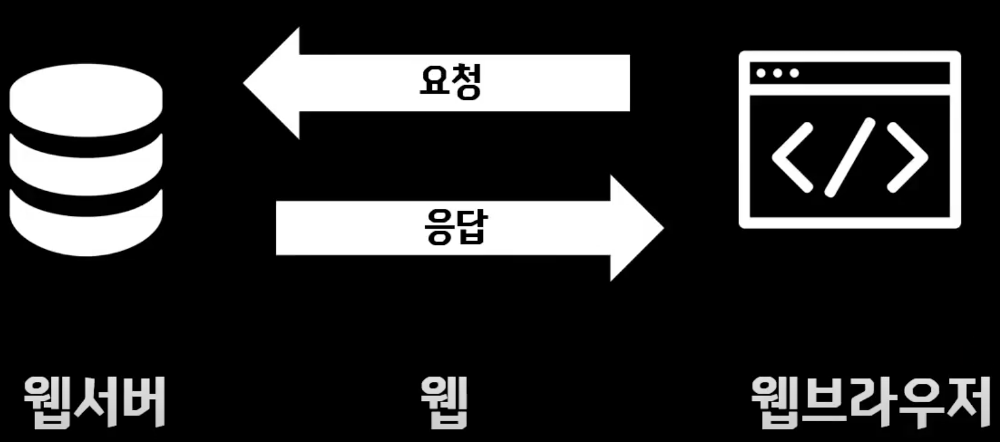
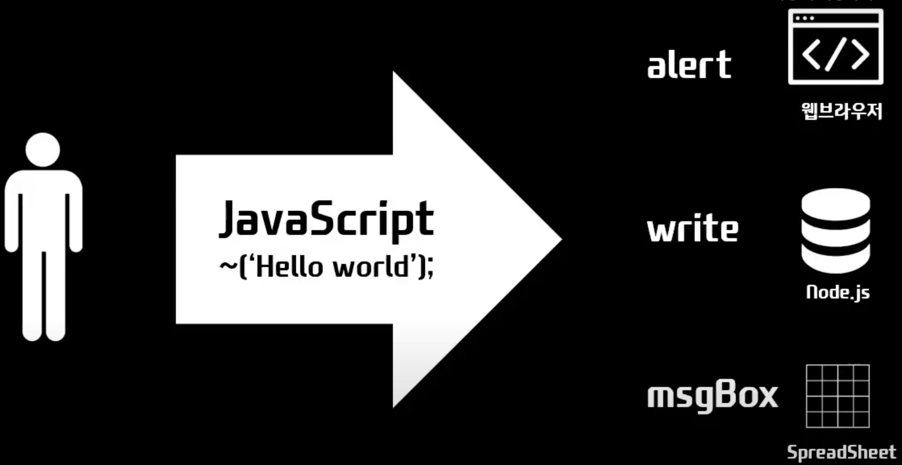
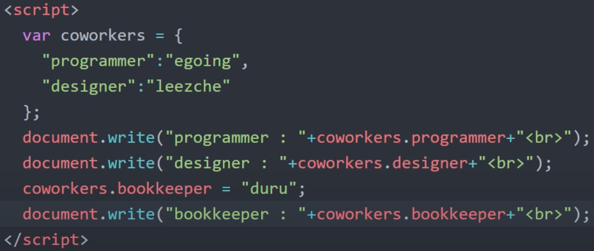
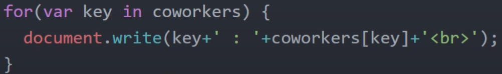
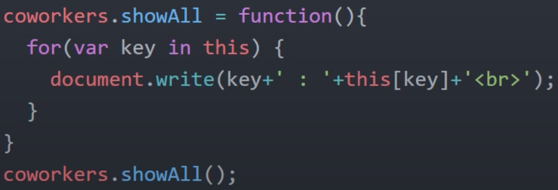
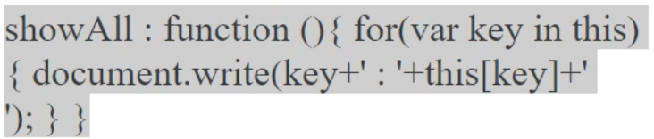

Javascript
웹브라우저로 동작되는 SW에 프로그래밍적인 제어를 하기 위한 언어
"탈웹브라우저" : 더이상 자바스크립트는 웹브라우저에 국한되지 않음

웹서버를 동작하기 위한 도구로도 사용 -> 서버사이드 스크립트 대표적인 기술 : node.js
node.js 같은 기술들이 자바 스크립트를 웹서버에서도 사용가능하게 함 ex : Java, PHP, ruby, python

콘솔
검사에서 콘솔창을 이용하면 자바스크립트 코드를 시험삼아 작성해볼 수 있다.
참고 : 크롬개발자도구
input
input 태그로 버튼을 넣을 수 있다.
input type="button" value="night" onclick="[자바스크립트 코드가 들어가는 자리]"
클릭하면 자바스크립트의 코드가 실행된다
조건문을 사용한 토글 버튼
하나의 기능으로 퉁치기 쌉가넝
리팩토링한 토글 버튼
반복문을 이용해서 링크한 곳 색깔 바꾸기
함수를 이용한 버튼 구현
Event
on으로 시작하는 속성들을 이벤트라고 하고 이를 통해 사용자와 상호작용을 할 수 있다.
Console
검사의 콘솔창에서 JS를 직접 실행시킬 수 있다.
'(문자열)'.length : 해당 문자열의 길이를 반환한다
자료형
number, string
변수와 상수
변수는 대입으로 값을 바꿀 수 있고 상수는 그럴 수 없다.
document.querySelector
"Javascript select tag by css selector" css에서와 같이 태그는 그대로 매개변수, 클래스 .믈래스, 아이디는 #아이디
쿼리 셀렉터는 해당하는거 한가지만 가져온다
document.querySelectorAll
nodelist를 반환한다
조건문
Repacktoring
동작은 그대로 두고 코드의 비효율적인 면을 없애고 가독성을 높이고 유지보수를 편리하게 만들기 위해 코드를 다시 작성하는 것을 리팩토링이라고 한다.
틈틈히 리팩토링을 해야된다.
함수
반복문을 쓰기 어려운 불연속적인 반복을 줄여준다. 기능을 분명히 이해할 수 있다. 코드의 양이 줄어든다. 어느 부분이 같은 동작을 하는지 확실하게 알 수 있다.
this는 이벤트가 소속되어있는 태그를 가리키도록 되어있다. 함수에서 this는 전역객체 (웹브라우저에서는 윈도우)
객체
정리정돈의 수단 : 함수와 그 함수와 연관되어있는 변수가 너무 많아지지 않게 함
예시 - document는 객체, querySelector는 그 객체에 소속되어있는 함수이고 이를 메소드라고 한다.
오브젝트 리터럴 {}, 오퍼레이터

객체에서 반복문
검색 : javascript object iterate

프로퍼티와 메소드

